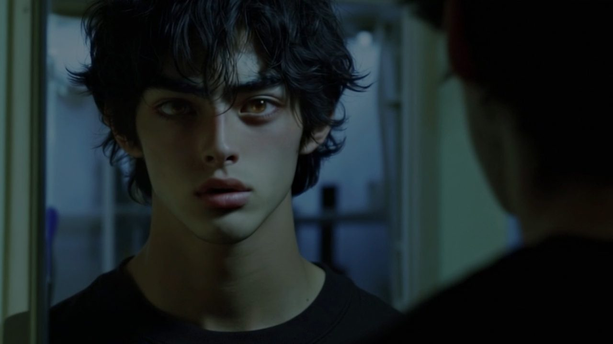
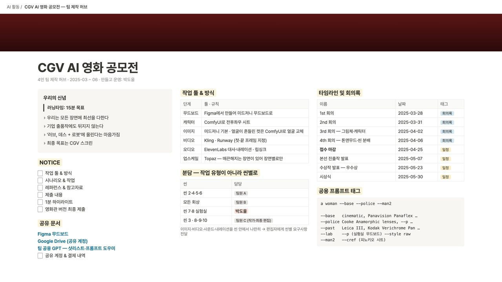
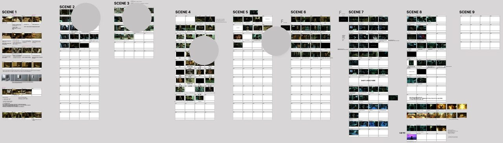
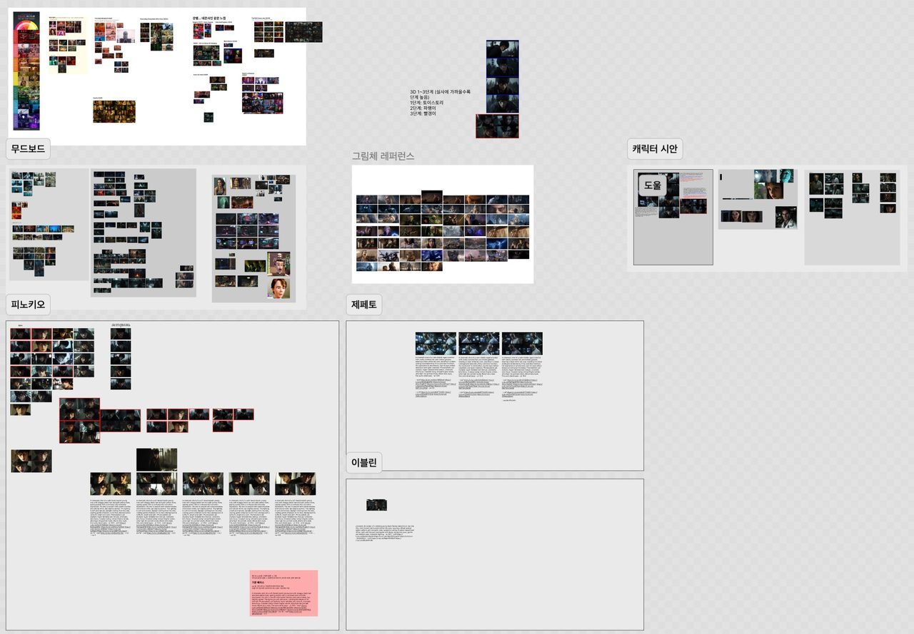
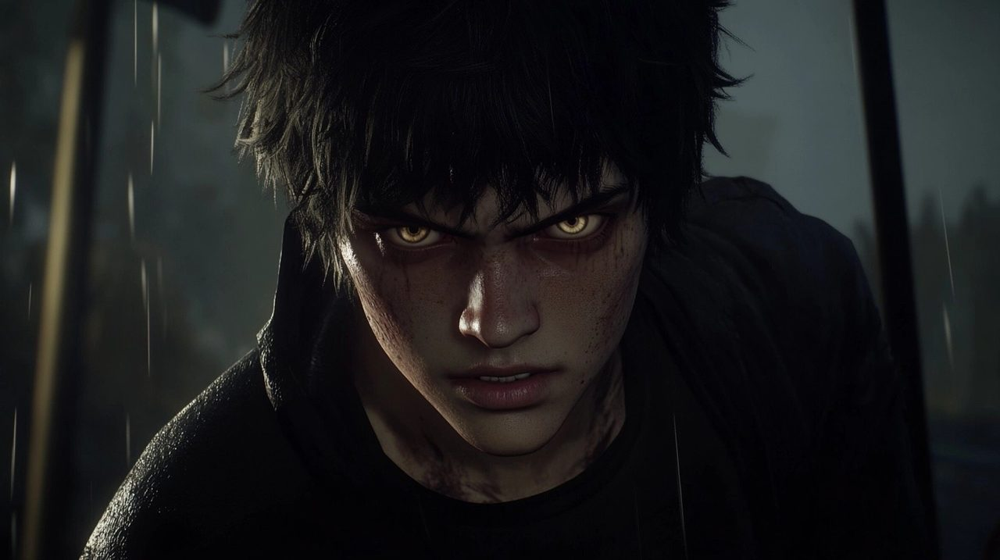

단편 영화 · 2025
피노키오: 비긴즈

네 명이 항상 같은 그림체와 같은 인물로 만들게 하는 시스템부터 구축했습니다. 노션에 팀 제작 허브를 짓고 운영했고, 작업을 단계가 아니라 씬으로 나눴고, 네 명이 쓰는 공용 프롬프트 태그를 깔았습니다. 제 씬은 실험실 씬 7·8입니다. 이미지 생성부터 Premiere 편집까지 했고 후반부 소스도 만들었습니다.
- 개봉
- CGV 극장
- 길이
- 본편 12:53 · 예고편 1:00
- 제작
- 첫 회의부터 출품까지 4주
- 공개
- 예고편 공개 · 본편 비공개
단계별 분업 대신 씬별로 나눴습니다
이미지·영상·사운드·편집을 단계마다 한 사람이 맡는 분업 대신, 씬을 세로로 잘라 한 사람이 자기 씬의 이미지·영상·사운드·내레이션을 끝까지 만들게 했습니다. 편집자에게는 씬마다 요구사항을 글로 넘겼습니다.


팀원들이 같은 그림체와 인물로 뽑게 한 Midjourney 공용 태그
팀 허브의 공용 태그 표 발췌
a woman --base --police --man2--base a cinematic scene, shot with Panavision Panaflex Platinum and Primo lenses,--police shot with Cooke Anamorphic lenses, --p (무드보드 코드) --ar 16:9 --style raw--past realistic lighting, taken with a Leica III rangefinder and Kodak Verichrome Pan film, …--recall shot with Arriflex 435 and Zeiss Ultra Prime lenses, Kodak Vision film look, …--lab --p (실험실 무드보드 코드) --style raw --ar 16:9--man1 --cref <제페토 시트>--man2 --cref <피노키오 시트>장소 태그 하나가 렌즈·필름 느낌과 무드보드를, 인물 태그가 캐릭터 시트를 불러옵니다. 순서와 필수 태그 규칙까지 허브에 적어 네 명이 같은 방식으로 사용했습니다.

써 보고 변경한 규칙
Midjourney 무드보드만으로는 그림체가 유지되지 않았습니다. 무드보드에는 그림체가 담기지 않기 때문입니다. 그림체를 프롬프트에 글로 적고 스타일 참조(sref)까지 넣는 것을 기본으로 바꿨습니다.
너무 어두운 이미지는 영상으로 바꾸면 움직임이 제대로 나오지 않았습니다. 요소가 다 보이는 밝기로 뽑고 어둠은 편집 보정에서 만들기로 했습니다.
얼굴이 흔들린 컷은 로컬 ComfyUI로 얼굴을 갈아 끼워 최종본에 넣었습니다. 업스케일은 얼굴이 도자기처럼 매끈해지는 장면이 있어 장면마다 골라 적용했습니다.
출품 뒤 이 작품은 일관성에서 좋은 평가를 받았습니다.
